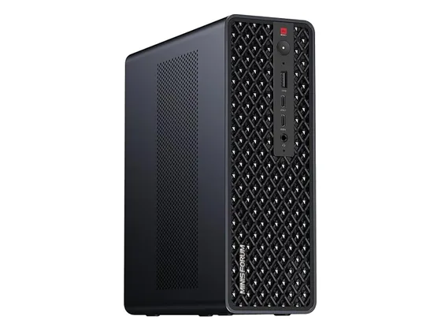
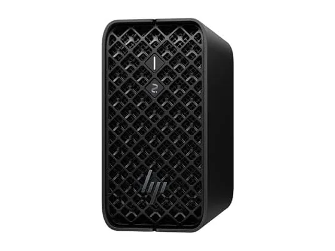
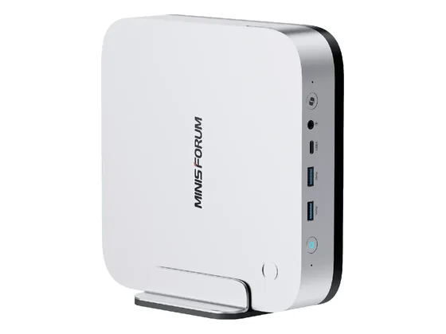
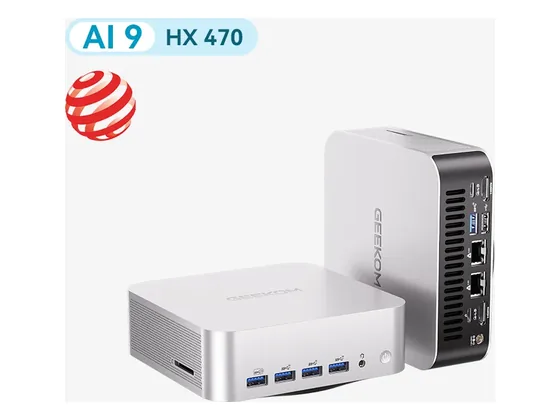

Minisforum MS-S1 Max : avis, tests et prix
Le verdict en une phrase. 16 cœurs Zen 5 et jusqu'à 128 Go de mémoire unifiée : une mini-station taillée pour l'IA locale et le calcul lourd.
N° 7 sur 10 dans le top 10 Ordinateurs de bureau création.

Pour qui ?
Vous faites tourner des modèles d'IA en local ou du calcul lourd et avez besoin de beaucoup de mémoire.
Vous voulez pouvoir ajouter de la mémoire après l'achat.
Le consensus de la presse
Une seule note chiffrée à ce jour : 8,0/10, attribuée par Frandroid. À lire comme un avis isolé, pas comme un consensus. Dernier test relevé : novembre 2025.
Où l'acheter
La configuration peut différer d'un marchand à l'autre : vérifiez la fiche avant d'acheter. Seuls les liens Amazon sont affiliés à ce jour ; les autres sont de simples liens directs. Aucun n'influence les notes ni le classement.
Tous les tests recensés
Chaque ligne renvoie vers le test d'origine. Les notes sont converties sur 10 ; « test » signale un article sans note chiffrée. Notre méthode.
- Frandroid8,0
- Notebookchecktest
Source du relevé : Synthèse CommentChoisir.
Les alternatives pour le même usage
Tout le top 10 →
HP Z2 Mini G1aUne vraie station de travail professionnelle au format mini : mémoire unifiée jusqu'à 128 Go, idéale pour la 3D et l'IA en local. N° 6 · Le mini tout métal
Minisforum AI X1 ProBoîtier métal, alimentation intégrée, lecteur d'empreintes et refroidissement efficace : un mini-PC haut de gamme calme et bien pensé. N° 8 · Le mini-PC le plus testé
Geekom A9 MaxUn mini-PC très puissant et bien fini, livré avec 32 Go de RAM évolutifs et 2 To de SSD. La puce graphique intégrée reste sa limite.Questions fréquentes
Que pense la presse de l'ordinateur Minisforum MS-S1 Max ?
La note presse moyenne est de 8,0/10, calculée sur 1 note. 16 cœurs Zen 5 et jusqu'à 128 Go de mémoire unifiée : une mini-station taillée pour l'IA locale et le calcul lourd.
Quels sont les points faibles relevés par les tests ?
Mémoire non évolutive ; Prix élevé.
À qui s'adresse le modèle Minisforum MS-S1 Max ?
Vous faites tourner des modèles d'IA en local ou du calcul lourd et avez besoin de beaucoup de mémoire. À éviter si : vous voulez pouvoir ajouter de la mémoire après l'achat.
Où l'acheter, et à quel prix ?
Comptez environ 2 720 € (prix indicatif constaté en octobre 2026). Nous l'avons trouvé en vente chez Amazon. Les prix changent vite et la configuration peut différer d'un marchand à l'autre : seul le prix affiché par le marchand fait foi.